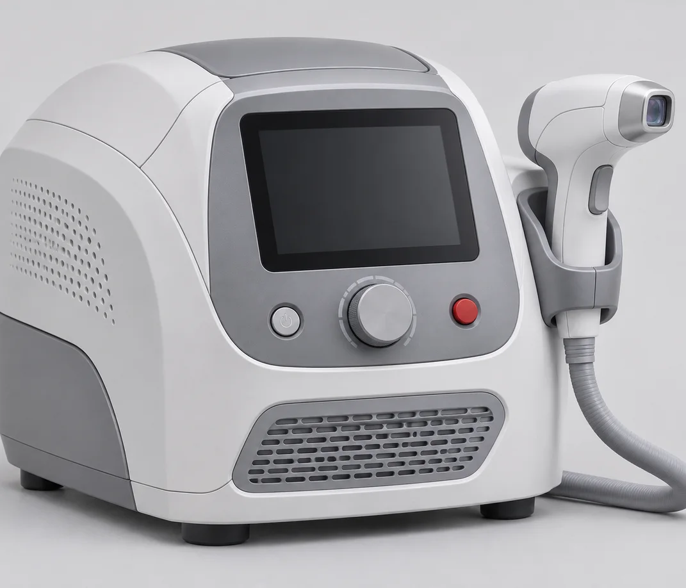
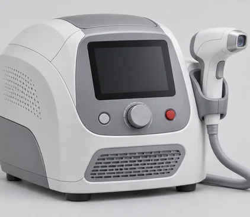
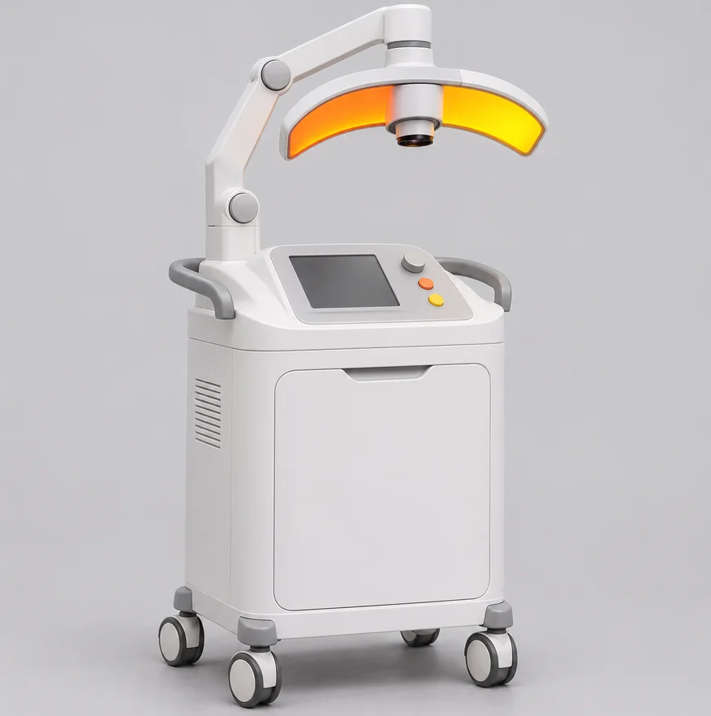

안검염과 안구건조증
안검염은 안구건조증의
가장 큰 원인 (약 80% 정도) 입니다.
마이봄샘은 눈물 증발을 줄이는 기름층 형성에 관여합니다.
눈꺼풀의 기름샘은 눈물 증발을 줄이는 역할을 합니다.
이 기름이 잘 나오지 않는 경우
안검염이 발생할 수 있습니다.
눈꺼풀 염증은 눈물막을 약하게 해 건조 증상을 악화시킬 수 있습니다.
주된 증상으로 눈 주위에 붉은 테를
눈꺼풀 가장자리에 충혈이 보이고 속눈썹이
빠지거나 안쪽으로 말려 눈을 자극할 수 있습니다.
눈이 가렵거나 이물감과 자극감이 생기고
눈꼬리 쪽에 흰 눈곱이 낍니다.
심하면 시력이 떨어지기도 합니다.
IPL
Intense Pulsed Light
IPL(Intense Pulsed Light)은 안구건조 증상 완화에 있어
안전하고
유효한 기술로 인정받아 신의료기술로
채택되었습니다.
눈꺼풀 표면과 주변에 빛을 쪼여
온열 효과를 통해 눈물을 분비하는
혈관 건강을
개선하면서 안구건조증을 완화합니다.
-
M22 IPL
IPL 장비는 전용 필터를 거친 빛을 이용해 눈꺼풀 주변을 관리합니다.
필터를 통과한 빛에서 생긴 열이 목표 깊이에 전달되도록 설계되어 있습니다.
눈 상태와 컨디션에 영향을 많이 받는 안구건조증이라도
원인부터 치료할 수 있고 효과가 오래갑니다.
- 안정적인 사파이어 장착
- 안전하게 에너지 조사량 낮음
- 수냉식 Cooling팀
- 에너지 자극이 낮으므로 안정적
M22 IPL


-
아쿠아셀 IPL
이 IPL 장비는 실시간 자동 온도 센서를 갖춰 더 높은 에너지를
쓸 수 있어 치료 효과가 크고, 피부에 닿는 팁의 온도를 조절해 안전합니다.
또 모든 펄스에 같은 에너지를 전달해 빠르고 안정적인 효과를 볼 수 있습니다.
- Two Cooling System 기능
- Handpiece의 빛 번짐 방지용 특수코팅
- Smooth Mode 기능 탑재
- 자동온도 센서를 장착하여 더 안전함
AQUA CEL IPL
